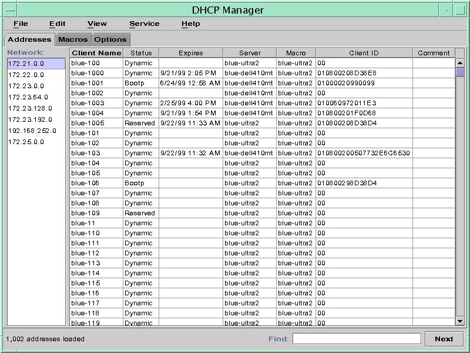
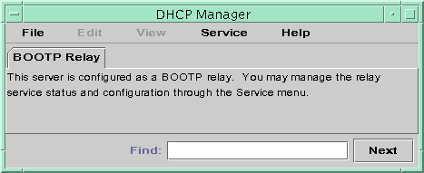

About DHCP Manager
DHCP Manager is a graphical user interface (GUI) tool that you can
use to perform administration tasks on the DHCP service.
DHCP Manager Window
The DHCP Manager window's appearance depends on how the DHCP server is configured
on the system on which DHCP Manager is running.
DHCP Manager uses a tab-based window when the system is configured as a
DHCP server. You select a tab for the type of information you
want to work with. DHCP Manager features the following tabs:
Addressestab – Lists all networks and IP addresses placed under DHCP management. From the Addresses tab, you can work with networks and IP addresses. You can add or delete items individually or in blocks. You can also modify the properties of individual networks or IP addresses or simultaneously make the same property modifications for a block of addresses. When you start DHCP Manager, the Addresses tab opens first.
Macros tab – Lists all available macros in the DHCP configuration table (dhcptab) and the options contained within the macros. From the Macros tab, you can create or delete macros. You can also modify macros by adding options and providing values for the options.
Options tab – Lists all options that have been defined for this DHCP server. Options that are listed on this tab are not the standard options defined in the DHCP protocol. The options are extensions to the standard options, and have a class of Extended, Vendor, or Site. Standard options cannot be changed in any way so those options are not listed here.
The following figure shows how the DHCP Manager window might look when you
start DHCP Manager on a DHCP server.
Figure 15-1 DHCP Manager on a DHCP Server System

When the server is configured as a BOOTP relay agent, the DHCP
Manager window does not show these tabs. The BOOTP relay agent does not
need the same information. You can only modify the BOOTP relay agent's properties
and stop or start the DHCP daemon with DHCP Manager. The following figure
shows how DHCP Manager might look on a system that is configured as
a BOOTP relay agent.
Figure 15-2 DHCP Manager on a BOOTP Relay Agent

DHCP Manager Menus
DHCP Manager menus include the following items:
File – Exit DHCP Manager.
Edit – Perform management tasks for networks, addresses, macros, and options.
View – Change the look of the tab currently selected.
Service – Manage the DHCP daemon and data store.
Help – Open your web browser and display help for DHCP Manager.
When DHCP Manager runs on a BOOTP relay agent, the Edit and
View menus are disabled.
All DHCP management tasks are accomplished through the Edit and Service menus.
You use the commands in the Edit menu to create, delete, and
modify items in the selected tab. Items can include networks, addresses, macros, and options.
When the Addresses tab is selected, the Edit menu also lists wizards. Wizards
are sets of dialogs that help you create networks and multiple IP addresses.
The Service menu lists commands that enable you to manage the DHCP
daemon. From the Service menu, you can perform the following tasks:
Start and stop the DHCP daemon.
Enable and disable the DHCP daemon.
Modify the server configuration.
Unconfigure the server.
Convert the data store.
Export and import data on the server.
Starting and Stopping DHCP Manager
You must run DHCP Manager on a DHCP server system as superuser.
If you must run DHCP Manager remotely, you can send the display to
your system by using the X Window remote display feature.
How to Start and Stop DHCP Manager
- Become superuser on the DHCP server system.
- (Optional) If you are logged in to the DHCP server system remotely, display DHCP
Manager on your local system as follows.
- Type the following on the local system:
# xhost +server-name
- Type the following on the remote DHCP server system:
# DISPLAY=local-hostname;export DISPLAY
- Start DHCP Manager.
# /usr/sadm/admin/bin/dhcpmgr &
The DHCP Manager window opens. If the server is configured as a
DHCP server, the window displays the Addresses tab. If the server is configured as
a BOOTP relay agent, the window displays with no tabs.
- To stop DHCP Manager, choose Exit from the File menu.
The DHCP Manager window closes.